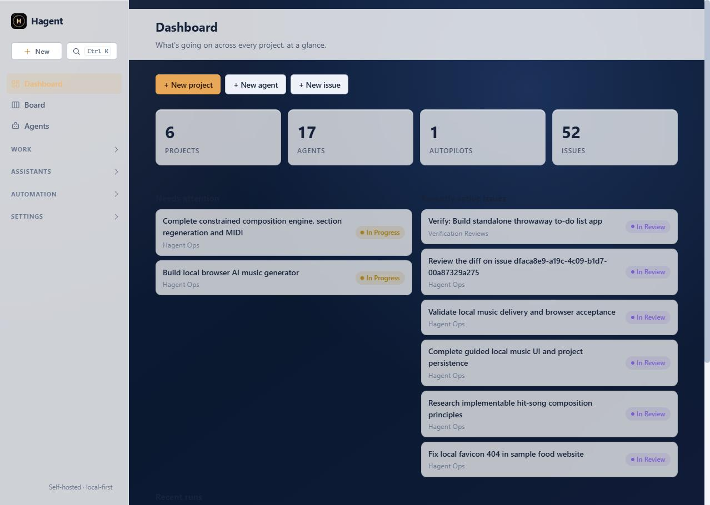

A dashboard for every part of the workflow
Track work on a kanban board, manage your roster of agents, and see what needs attention at a glance.


Projects, issues, agents, and pluggable AI runtimes — a kanban-style workspace for running AI agents against real work, without sending your data to someone else's cloud.
pip install -r requirements.txt && hagent serve

Most orchestration platforms are closed SaaS products. Hagent isn't.
No dependency on a hosted backend. Your projects, issues, and agent history live in your own SQLite database.
Cloud APIs, local models via Ollama/LM Studio, or installed AI CLIs — swap backends without touching the rest of the system.
Issues with status, labels, properties, sub-issues, and comments — not just a flat task queue.
Track work on a kanban board, manage your roster of agents, and see what needs attention at a glance.
One run(prompt, context) interface. Adding a new provider never touches the CLI, web layer, or task engine.
Clone the repo, install, and you're running your own orchestration workspace.